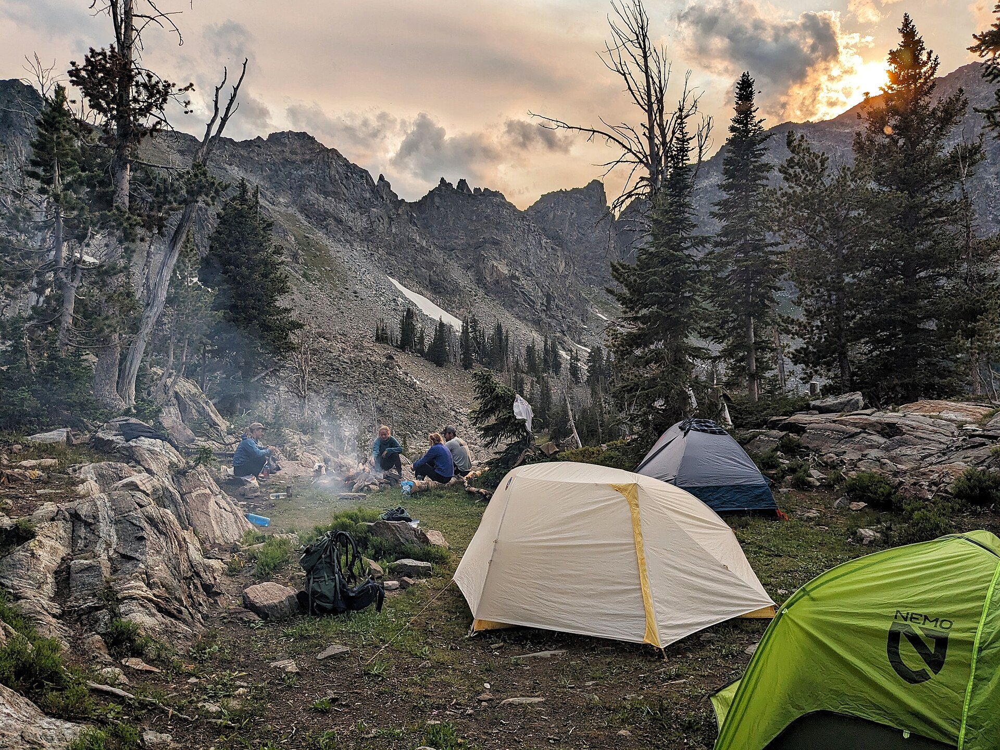
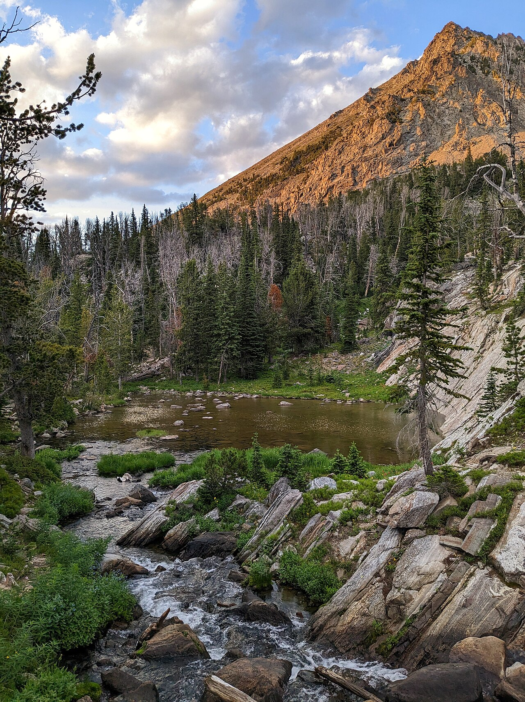
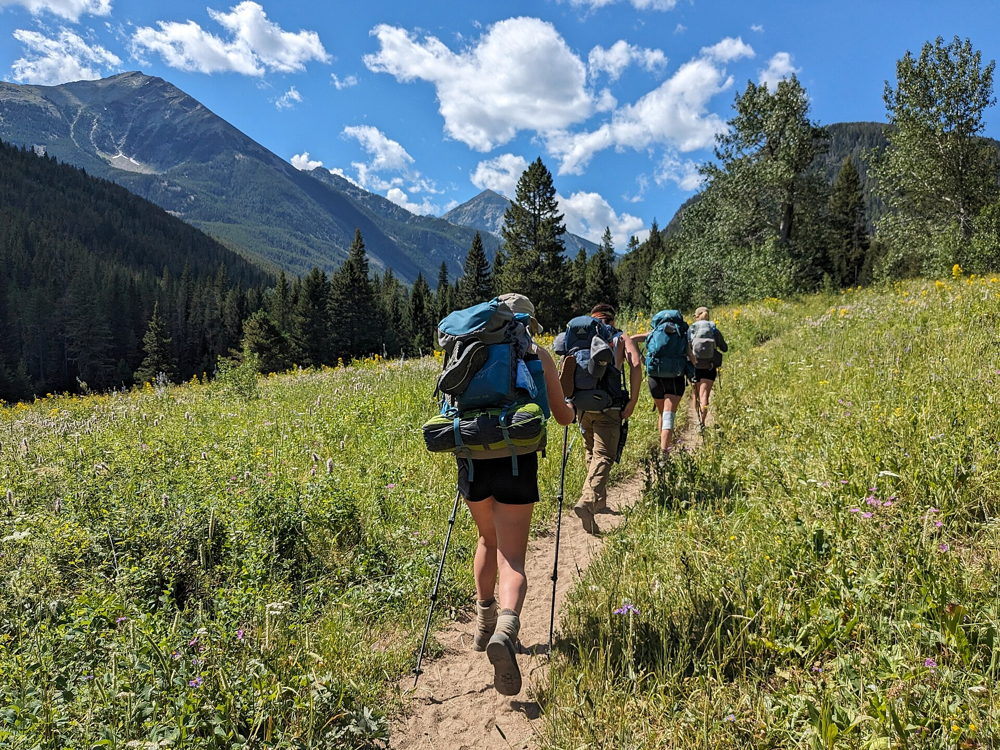
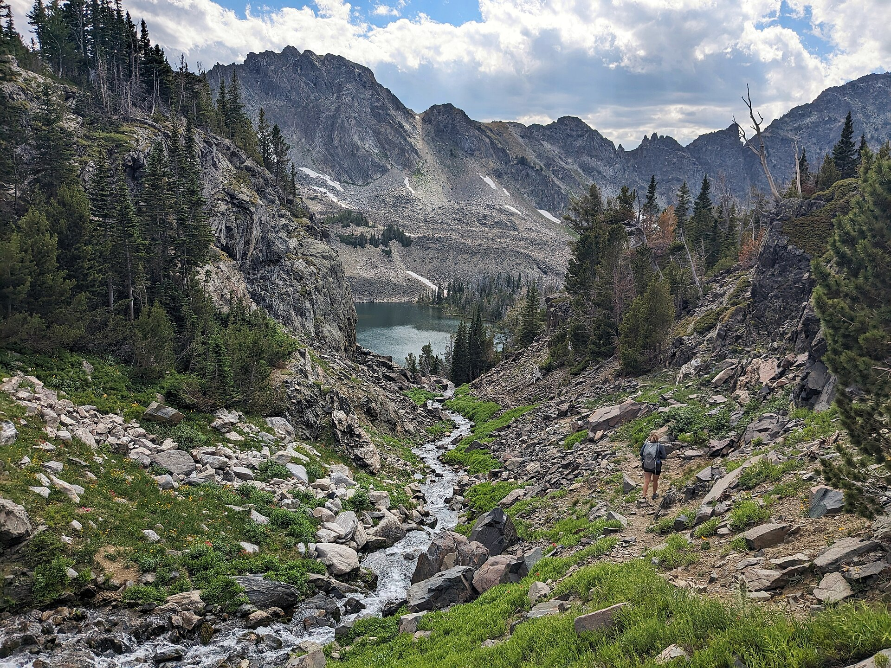
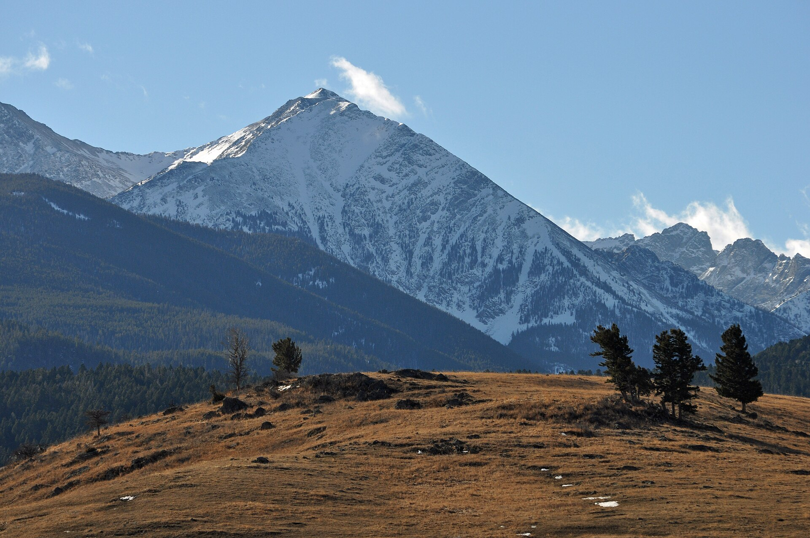
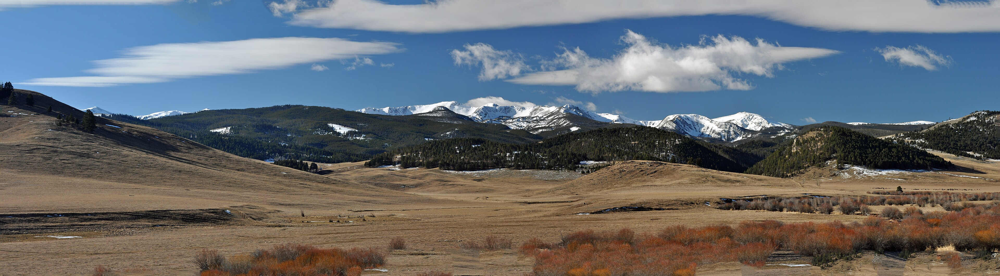
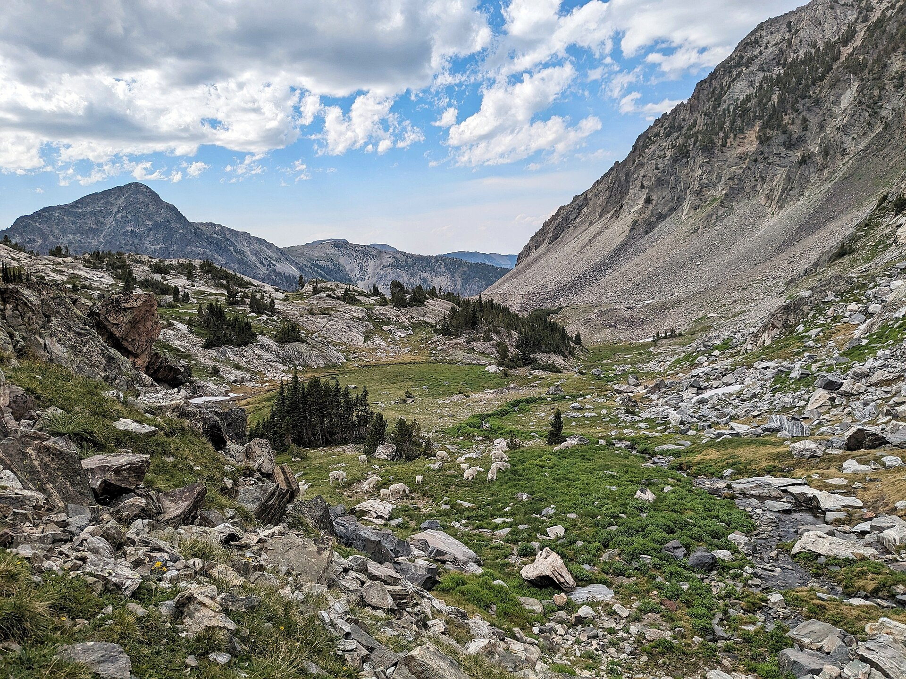
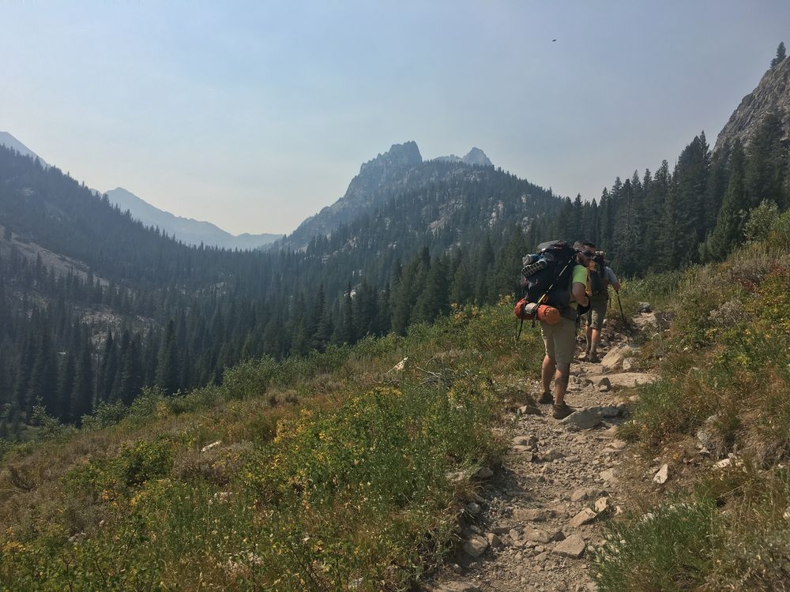
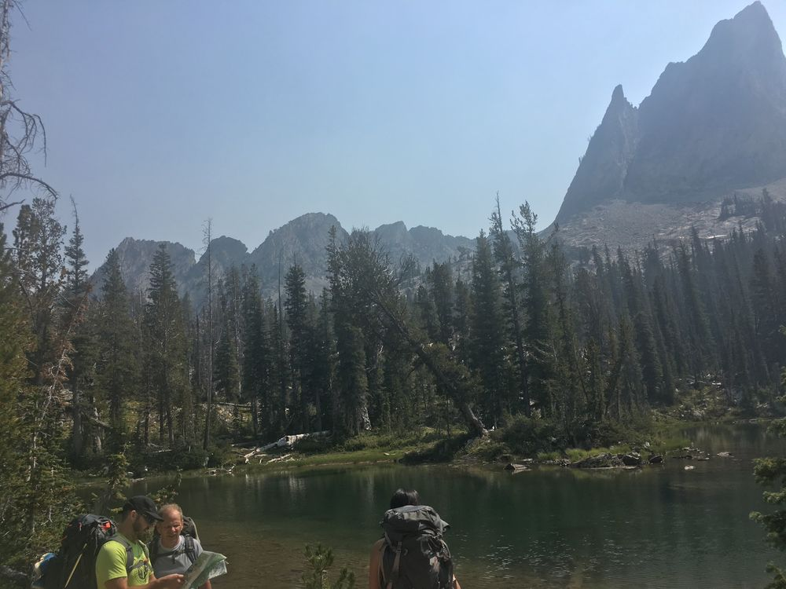
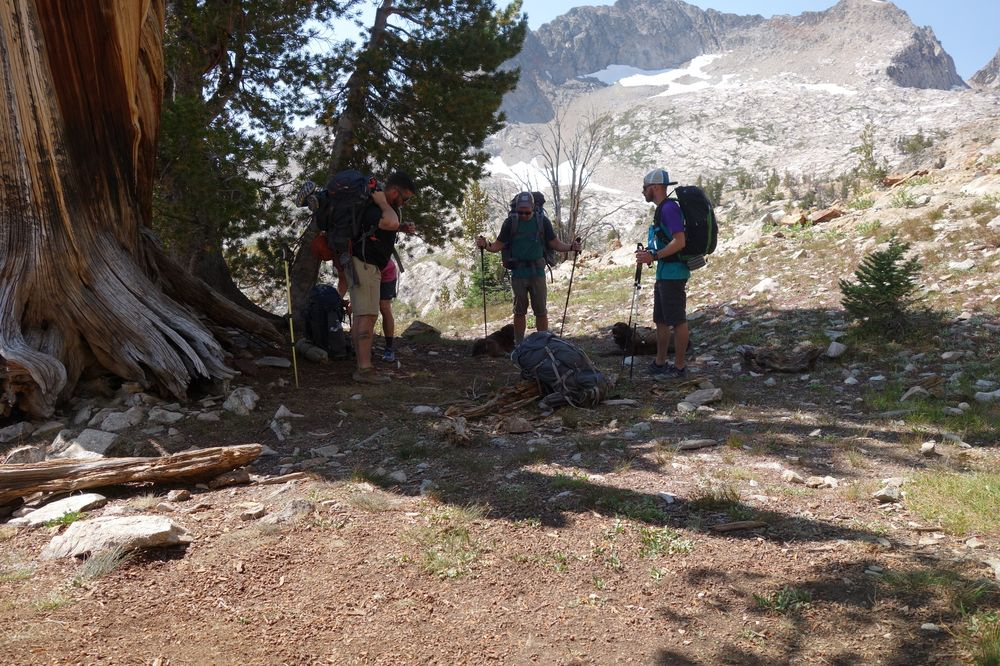

Spanish Peaks from Spanish Creek valley · Mike Cline · CC BY-SA 4.0
Path Beaters '26
Spanish Peaks Loop
Lee Metcalf Wilderness · Madison Range, Montana · September 16 – 21, 2026
~20 mi
loop · no shuttle
+5,500 ft
total climb
9,435 ft
high point
3
nights on trail
None
permits needed
Grizzly
spray + canister
The plan
Six days, door to door
Fly into Salt Lake, stage at Dad's in Pocatello, drive up Thursday, and walk a lake-to-lake loop
through the Spanish Peaks with three camps: the Spanish Lakes, the Jerome Rock Lakes, and a warm last night
on lower Falls Creek that turns Monday into a short stroll to the van and an afternoon flight out of Bozeman.
Sun
Mon
Tue
Wed
Thu
Fri
Sat
1
2
3
4
5
6
7
8
9
10
11
12
13
14
15
16Fly into SLC · drive to Pocatello · gear night
17Drive to Spanish Creek TH · sleep at trailhead
18Hike to Spanish Lakes · camp 1
19Divide + Lake Solitude · camp 2
20Day-hike am · move to camp 3
21Dawn exit · BZN flights
22
23
24
25
26
27
28
29
30
Wed Sept 16
Travel + stage
Fly into SLC, consolidate into the Sprinter, drive to Pocatello (~2.5 hr). Gear sort, food, fuel canisters.
Sleep: Pocatello (beds)
Thu Sept 17
Drive to trailhead
Pocatello → Spanish Creek TH (~4.5–5 hr) via Butte and Bozeman. Register, pack check, water top-off.
Sleep: trailhead (van / cabin)
Fri Sept 18
Hike in
~8 mi, +2,900 ft. Flat first 3 mi along the creek, then the climb. Camp on the west Spanish Lake.
Camp 1 · Spanish Lakes · 8,830 ft
Sat Sept 19
The divide
~4.5 mi over the 9,435-ft divide, long lunch at Lake Solitude. In camp by ~1 pm.
Camp 2 · Jerome Rock Lakes · ~8,830 ft
Sun Sept 20
Day-hike + move
Light-pack morning around the lakes. ~2–3 pm: 3.5 mi down Falls Creek to the low camp.
Camp 3 · lower Falls Creek · ~7,150 ft
Mon Sept 21
Dawn exit
Hiking by 7:00, past Pioneer Falls, at the van by ~10. BZN is an hour away. Van returns south.
Fliers home · van south
Route
The map: four legs, three camps
Tap any marker for details. Purple dots are the campsites we're aiming for,
loaded as waypoints in the group GPX along with the divide, the junction, and Pioneer Falls.
Map tiles need an internet connection. All coordinates live in the GPX.
One real climb (Friday), one pass day (Saturday), then it's all downhill.
Hover or tap for point values; scroll sideways on a phone.
Camps
Where we sleep
Three camps, each picked for group-of-six-plus space. The first two are big established lakeside sites
(site numbers match the waypoints in the GPX); the last is a warm, sheltered night in the timber that sets up the easy exit.

Camp 1's basin: an evening at the Spanish Lakes. USDA Forest Service, July 2023.

The Spanish Lakes sit at 8,800 ft under the divide headwall. USDA Forest Service.
Friday · Spanish Lakes, west lake NW shore Site 56 · fits 15+
6,000 sq ft of flat ground · open forest · 30 ft to the creek · 50 ft off the trail
The biggest site in the basin and the group anchor: room for every tent with a real kitchen area. It's an
outfitter-style camp, so expect a big fire ring and some horse sign; that's the price of flat ground for eight.
If it's taken (Friday basins fill, so we arrive mid-afternoon): Site 66, then 61,
working south along the west shore; Site 52 is the small quiet one right off the trail.
Saturday · Jerome Rock Lakes, upper lake Site 18 · fits 7–10
1,800 sq ft · open forest · 50 ft to the lake · right beside the trail
Home for the trip's best afternoon: the three-lake circuit, crest viewpoints, and six hours of light.
Overflow tents go at sites 15/16/17 within a couple hundred yards; 15 is tucked in the trees, the most sheltered spot.
Bonus options on the walk in: Lake Solitude (mile 2.5, sites 29/31, both huge) if
weather says stop early, and quiet Upper Falls Creek Lake (mile 3.4, site 25) if we want the basin to ourselves.
Sunday · lower Falls Creek ~7,150 ft
Timbered creek bottom · warmest night of the trip · ~2 hr above the van
Dispersed camp on a bench above the creek: pick a flat spot in the trees 200 ft off the water, above the
Pioneer Falls gorge. Trading the alpine view for a mild night and a two-hour Monday is the move that makes
the afternoon flights work.
Running late Sunday? Drop even lower; every step down shrinks Monday.
Conditions
What September gives us up there
Mid-September in the Madison Range is the sweet spot: stable weather, no bugs, gold in the meadows.
It is also genuinely cold at night at 8,800 ft. Plan for summer days and winter nights.
Days
45–60°F
Sunny hiking weather; T-shirt warm in the sun, chilly the second you stop in shade or wind.
Nights
20s–30s
Hard freezes at both high camps. Water bottles ice up; camp shoes and a puffy are not optional.
Daylight
12h 20m
Sunrise 7:08, sunset 7:30. First usable light ~6:40 am, fully dark by 8 pm. Headlamps for dinner.
Sky
Watch PM
Afternoon storms build fast on the divide; cross it in the morning. Late-season snow is possible above 9,000 ft.
Wind
Exposed
Camps 1 and 2 sit in open basins. Pitch tents for wind, not for the view; the view is everywhere anyway.
Water
Everywhere*
*Except the divide. Lakes and creeks all four days; carry 2 L leaving camp Saturday for the high traverse. Filter everything.
Packing
What to bring
The freeze at the high camps sets the list. If your sleeping bag isn't rated to 20°F, fix that first;
everything else is standard early-fall alpine kit.
Wear / hike in
Sun hoody or tee + hiking pants/shorts
Broken-in boots or trail runners
Wool socks (3 pairs for the trip)
Sun hat + sunglasses + sunscreen
Trekking poles: 3,000 ft of rocky downhill Sunday–Monday
Warm layers
Real puffy (down or synthetic)
Fleece or midlayer
Beanie + gloves
Wind shell for the divide, rain shell regardless
Base layer top + bottom to sleep in
Microspikes only if snow shows in the forecast
Sleep + camp
20°F bag (this is the non-negotiable)
Insulated pad, R-value 4+
Camp shoes for frosty mornings
Headlamp + fresh batteries
2 L water capacity + filter
Camp mug for the summit-night pour
Group + bear kit
Bear spray on every hip belt (grizzly country)
IGBC bear canisters, food split across them
Stoves + fuel (bought in Pocatello; can't fly with it)
Satellite messenger (no cell service anywhere on the loop)
Paper map + the group GPX on two phones
First-aid kit + repair bits
Day by day
On the trail

Friday's approach up the South Fork Spanish Creek Trail. USDA Forest Service.

Granite country near the Spanish Lakes. USDA Forest Service.
Friday: trailhead to Spanish Lakes
~8 mi · +2,900 ft · 6,100 → 8,830 ft · 5–6.5 hr · on trail by 8:30
Three flat, fast miles along the creek to warm up; the Falls Creek junction we'll come back down Monday passes at mile 3.
The climb is all in the back half: ~1,500 ft through miles 5–7. Steady pace, plenty of breaks.
In camp by ~3 pm at Site 56. Fill bottles and cook before dark; the freeze comes fast once the sun drops.
Evening option: walk up tomorrow's trail toward the divide for sunset on the crest, headlamps back down.
Saturday: over the divide, past Lake Solitude
~4.5 mi · over the 9,435-ft divide at mile 1.7 · ~4 hr · carry 2 L from camp
Short climb out of the basin to the trip's high point and its best view. We cross in the morning, before any weather builds.
Mile 2.5: Lake Solitude sits right off the trail. Long lunch, maybe a very brave swim.
Mile 3.4: Upper Falls Creek Lake, the last water before camp.
In camp by ~1 pm with six hours of light: the three-lake circuit, a crest viewpoint, fishing, or aggressive napping.
Sunday: play morning, then the camp move
Morning light packs · then 3.5 mi, −1,500 ft, ~2 hr · camp at ~7,150 ft
Morning is free: finish the lakes circuit, tag a crest point, or hike back up to Solitude without packs.
~2–3 pm: down Falls Creek. The first mile is the steep, rocky bit; poles out, take it easy.
Camp 3 in the timber near the creek: the warm night. Fires only if the district hasn't posted restrictions.
Moving low today is what turns Monday from an 8-mile race into a 2-hour walk.
Monday: dawn exit, fly home
~4 mi · mostly gentle downhill · ~2–3 hr · vans by 10, BZN by 11:30
Hiking at 7:00, coffee at the van instead of a second camp breakfast.
Half a mile below camp: Pioneer Falls, a 40-footer in a narrow gorge, right on the trail. The trip's closing shot.
Rejoin Friday's flat corridor at the junction and cruise the last 2.5 mi.
Fliers to BZN (about an hour); the van heads for Pocatello or SLC.
Monday plan
Hike out
At the van
At BZN
Book flights
Low camp Sunday (the plan)
~4 mi, gentle
9:30–10:30 am
~11:30 am
1:30 pm or later
If we stay high Sunday
~8 mi, −3,000 ft
12:30–1:30 pm
~2:30 pm
4:30 pm or later
Zero-stress option: hotel in Bozeman Monday night, fly Tuesday.
The van driver has no time pressure either way.
Summits
Gallatin Peak vs Blaze Mountain
The range high point is real mountaineering and a 20+ mile day from anywhere;
the summit that actually fits this trip is Blaze, right above camp 1.

Gallatin Peak, 11,015 ft: admired from the divide, saved for its own trip. Mike Cline · CC BY-SA 4.0.

Blaze Mountain (~10,400 ft) above Spanish Creek: the scramble option from camp 1. Mike Cline · CC BY-SA 4.0.
Gallatin Peak: not this year
Every route to it runs 19–25 miles round trip with 5,500–7,800 ft of gain via Summit Lake, and strong parties report 10–12 hours.
No trail heads that way from our side of the range, and the summit block is a Class 3–4 scramble on loose rock.
The divide crossing already hands us the big Gallatin view for free. We wave, we file it for a future year built around a Summit Lake camp.
Blaze Mountain: the one that fits
An off-trail scramble straight from the Spanish Lakes basin: up the flank of the blaze-shaped snowfield, a mile of bushwhack, summit a short scramble beyond.
Views across the whole Spanish Peaks to Lone Peak and the Madison Valley.
Saturday-morning option for the scramblers before the short pack day; confident feet, paper map, hard turnaround time.
Wildlife
Bear country, done right
The rules we run
Spray rides on the hip belt, never inside the pack. Practice the draw at the trailhead.
All food, trash, toiletries, and any drink that isn't plain water lives in the bear canisters, even empties.
Triangle camp: tents, kitchen, and food storage ~100 yards apart, cooking downwind of the tents.
Noise through the brushy creek bottoms; packs never left unattended on side trips.

The neighbors: mountain goats in the Lee Metcalf. USDA Forest Service.
The tradition
Since we were lighter and our packs were heavier
Off and on for quite a while now, usually around Labor Day: mostly the Sawtooths, twice the
Wind Rivers, and in 2026 the Spanish Peaks join the list. Scroll the archive; every card carries its year.
2017

Into the high country. Sept 2017 · Sawtooths2017

Map check under the spires. Sept 2017 · Sawtooths2017

Pack break at the old whitebark. Sept 2017 · Sawtooths2017